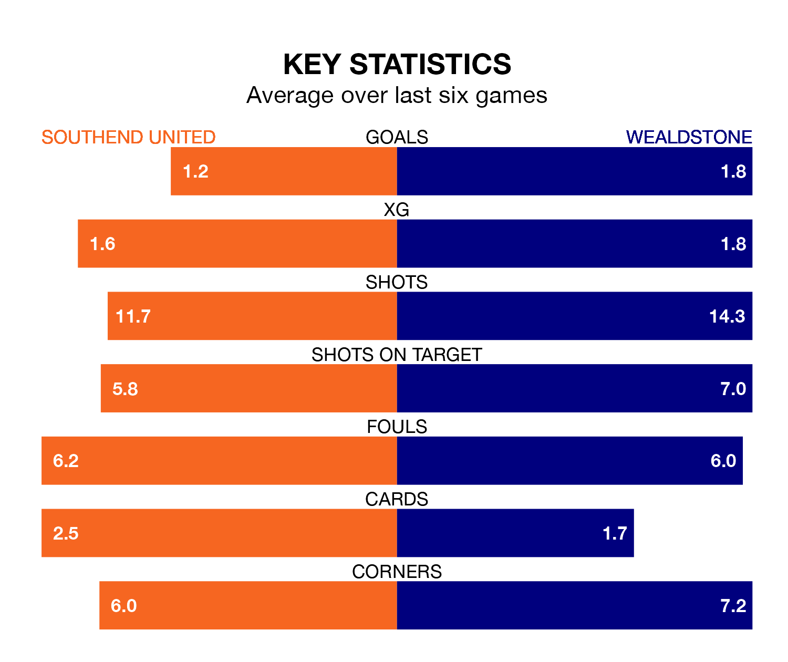

Southend United are heavy favourites to keep all three points at home in Tuesday's late kick-off against Wealdstone.
The Shrimpers, who sit fifth in National League with 27 games played, are priced at 1.6 to seal victory at Roots Hall.
Sitting eight places and 11 points behind them in the table, Wealdstone are 4.6 to win with *Betting Company*, while the draw is at 3.6.
With 34 goals in 25 games so far this season, Wealdstone are scoring at below the league average rate with 1.4 goals per game. But they are conceding fewer than average too, letting in 36 goals at a rate of 1.4 per game.
Southend, meanwhile, are above average scorers, with 1.6 goals per game, compared to a league average of 1.5. They have conceded 1.0 goal per game.
In the last five years, Southend and Wealdstone have played each other on four occasions. Southend won two of them, Wealdstone one, and they drew once.
On average, the Shrimpers scored 0.8 goals and Wealdstone 0.5 in those matches.
Their last meeting was on April 29, when Southend won 2-1 at home.
United are in mixed form in National League, with three wins and three losses from their last six games.
With three wins and a draw over that period, the away side's form is slightly better – they have taken 10 points from 18, compared to the Shrimpers' nine.
Southend's last match was on Saturday, a 1-0 win against Eastleigh, with Jack Bridge getting the goal for the Shrimpers.
Wealdstone lost 2-0 against Ebbsfleet United last time out, on January 6.
Updated: 14:53 (UTC), 16/01/24